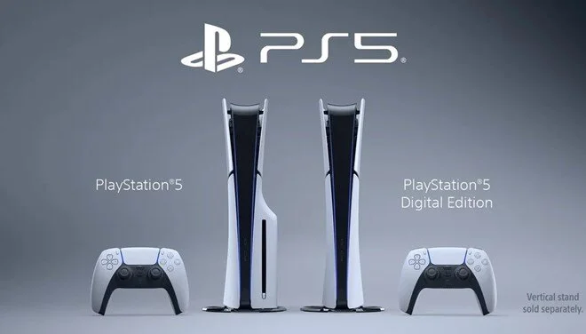

Sony şu ana kadar 46,6 milyondan fazla PS5 konsolu sattı
Sony, PlayStation 5 oyun konsollarının çıkış yaptığı Kasım 2020 tarihinden bu yana 46.6 milyon adet
satıldığını
açıkladı. Öte yandan Marvel's Spider-Man 2 çıkış yaptıktan 11 gün sonra 5 milyon adet sattı.
Bill Gates'ten yapay zeka yorumu: Şimdilik çok aptal
Microsoft'un kurucusu Bill Gates'ten yapay zekanın geleceğine dair heyecan verici öngörüler geldi. Gates,
""5 yıl sonra
herkesin yapay zekalı kişisel asistanı olacak. Yapay zeka şimdilik çok aptal." diye konuştu.